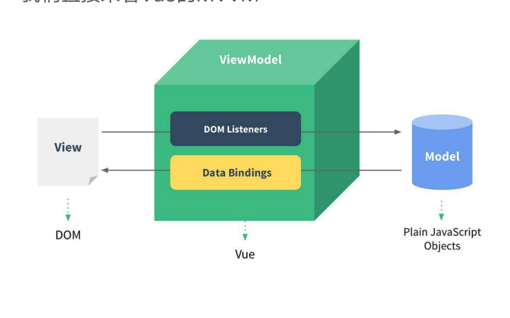

1. 邂逅vue¶
1.1. 遇见vue¶
1.1.1. 为什么学习vuejs¶
vue学习的原因很多，可能有如下的集中原因：
公司将原来的项目进行vue重构
公司使用vue技术栈
大量前段工作岗位对vue有一定要求
vue非常火，国人开发维护。
1.1.2. 简单认识vue¶
Vue (读音 /vjuː/)
1.1.3. vue的特点¶
vue是渐进式框架的
解耦视图和数据
前段路由技术
状态管理
虚拟dom
1.2. 安装Vue¶
安装方式比较多
1.2.1. cdn引入¶
cdn方式推荐代码部署在服务器上面的比较好， 让用户可以使用cdn技术快速访问到文件。
<!-- 开发环境版本，包含了有帮助的命令行警告 -->
<script src="https://cdn.jsdelivr.net/npm/vue/dist/vue.js"></script>
<!-- 生产环境版本，优化了尺寸和速度 -->
<script src="https://cdn.jsdelivr.net/npm/vue"></script>
1.2.4. cli和npm结合¶
后续通过webpack和CLI的使用，我们使用该方式。
1.3. 体验vue¶
1.3.1. hello vue¶
通过简单的hello vue 展示一个定义的数据。
1 2 3 4 5 6 7 8 9 10 11 12 13 14 15 16 17 18 19 20 21 22 23 24 25 26 | <!DOCTYPE html>
<head>
<meta charset="UTF-8">
<meta name="viewport" content="width=device-width, initial-scale=1.0">
<title>Document</title>
</head>
<body>
<div id="app">
<h2> {{ message }}</h2>
</div>
<script src="../js/vue.js"></script>
<script>
let app = new Vue({
el: "#app",
data: {
"message": "123"
}
})
</script>
</body>
</html>
|
可以在浏览器进行数据修改，然后自动页面修改。
1.3.2. vue显示列表¶
1 2 3 4 5 6 7 8 9 10 11 12 13 14 15 16 17 18 19 20 21 22 23 24 25 26 27 28 29 | <!doctype html>
<meta charset="UTF-8">
<meta name="viewport"
content="width=device-width, user-scalable=no, initial-scale=1.0, maximum-scale=1.0, minimum-scale=1.0">
<meta http-equiv="X-UA-Compatible" content="ie=edge">
<title>Document</title>
</head>
<body>
<script src="../js/vue.js"></script>
<div id="app">
<ul>
<li v-for="zoom in zooms ">
{{ zoom }}
</li>
</ul>
</div>
<script>
let app = new Vue({
el: "#app",
data: {
zooms: ["dog","cat","panda"]
}
})
</script>
</body>
</html>
|
1.3.3. vue简单计数器¶
1 2 3 4 5 6 7 8 9 10 11 12 13 14 15 16 17 18 19 20 21 22 23 24 25 26 27 28 29 30 31 32 33 34 35 36 | <!doctype html>
<meta charset="UTF-8">
<meta name="viewport"
content="width=device-width, user-scalable=no, initial-scale=1.0, maximum-scale=1.0, minimum-scale=1.0">
<meta http-equiv="X-UA-Compatible" content="ie=edge">
<title>Document</title>
</head>
<body>
<script src="../js/vue.js"></script>
<div id="app">
<h2>{{ cnt }}</h2>
<button @click="add">+</button>
<button @click="sub">-</button>
</div>
<script>
let app = new Vue({
el: "#app",
data: {
cnt:1,
},
methods:{
add: function (){
this.cnt+=1
},
sub: function(){
this.cnt-=1
}
}
})
</script>
</body>
</html>
|
1.4. mvvm架构¶
mvvm 是model view view model 的合称。
1.4.1. data和vue对象的分离¶
1.4.2. vue中的mvvm¶
- View层：
视图层 在我们前端开发中，通常就是DOM层。 主要的作用是给用户展示各种信息。
- Model层：
数据层 数据可能是我们固定的死数据，更多的是来自我们服务器，从网络上请求下来的数据。 在我们计数器的案例中，就是后面抽取出来的obj，当然，里面的数据可能没有这么简单。
- VueModel层：
视图模型层 视图模型层是View和Model沟通的桥梁。 一方面它实现了Data Binding，也就是数据绑定，将Model的改变实时的反应到View中 另一方面它实现了DOM Listener，也就是DOM监听，当DOM发生一些事件(点击、滚动、touch等)时，可以监听到，并在需要的情况下改变对应的Data
1.5. vue的options¶
vue的options有很多
主要的有以下几个
el: 决定vue实例管理哪个dom。
data: vue实例对应的数据对象。
methods: 定义方法，方便其他地方调用。